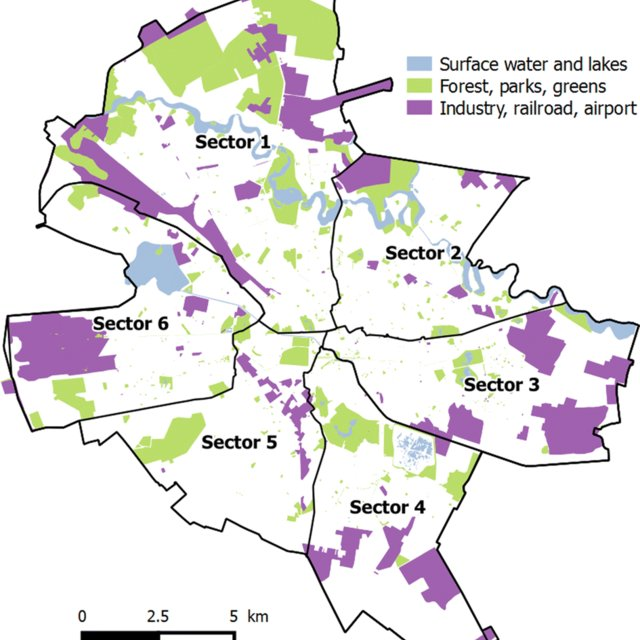
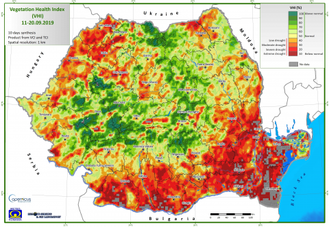

OVERVIEW
- Discussing policy implementation with the use of remotely sensed data in Bucharest
- Newly released initiative by the OECD which uses a detailed database to provide governments with detailed information on the real-time evolution of geographic indicators
- Providing examples of how to use this newly developed data source, and presenting the advantages it has in centralising information and facilitating exchange
- understanding what data sources to use and how, with the methodology in place, technological advancements will be more easily applied in future policy
The problematic area
For the question of policy implementation, we focus on Romania’s Capital, Bucharest! Below we have it’s current delineations

Bucharest suffers from many policy challenges due to incoherent decision making and high level of overlapping activity due to lack of communication. It is one of the only European cities without a coherent urban policy adopted by the state, as the decisions are taken on a local authority scale (Nica and Gavris (2009))
On of these, being the effects of droughts on the city. Researcher has been led to understand how drought has evolved in Romania since the 21st Century through the use of Remote Sensing ( Savin and Flueraru (2006) )

More recent work has focused on Bucharest Specific Land Cover usage over time ( Grivei and Datcu (2018) ) but has shown that the lack of in-depth research on these topics has made it hard to properly implement effective policies. This is why we select this OECD ‘Data Explorer’ as it would allow Romanian officials and researchers to benefit from the Drought index for example, and get a clear, reliable and unified view of the evolution that Romania has witnessed throughout the years.
The identified data policy source
We select the ‘Data Explorer’ source provided by the OECD. It is a data source that monitors exposure to climate-related hazards, consisting of 7 main categories, all constructed using remote sensing sources (Maes et al. (2022))
Extreme Temperature
Extreme Precipitation
Drought
Wildfire
Wind Threats
River Flooding
Coastal Flooding
One of the most powerful tools of this database is it’s ability to provide near-real time results, which allows better understanding of various Characteristics, such as LULC, which is a factor with high variability which is not always captured.
Furthermore, the data for all of these characteristics are available at a minimum since 1997 (for wildfires) and goes back up to 1950 (for drought info).
We add an example of the current interface that can be used by local researchers in order to tackle their current policy challenges, which could strongly benefit from this emerging datasource
Successful cities that have overcome similar issues
Although water correct and efficient water management has be a recurring issue in many cities, certain local governments have successfully managed to overcome these. For example, other European countries such as France are trying different methods to achieve this by re-using waste water.
Although expensive, Romania does have the funds, especially with the support from the European union to implement this. We can also recommend using further techniques, in addition to our data source, to detect water leakage through remote sensing techniques using the Quick Bird Satellite and band measures such as NDVI (Agapiou et al. (2014)) , typically used for vegetation recognition, and used as a criteria for drought detection in our previous depiction of Romania.
Personal Reflection
Limitations of the Data Source
One of the current limitations in the use of the ‘Data Explorer’ database is that it is still in the public beta release, as the initial launch of the programme was only in the second half of 2021. The beta release means that they are still testing new features in order to make sure all of their functionalities and data are correct.
We would also add, that current use of remote sensing for leakage detection is limited in terms of efficiency in highly dense and urban areas. We acknowledge this as it may affect the accuracy of the potential findings? Nonetheless, we are confident that, with the techniques in place, the quality of the equipment will increase and allow for more precise leakage detection in high density urban environments.
Additional information
Further information can be found on the following Xaringan presentation, which was led by my classmates (Ella, Sophia, Yanbo and Winxi) and myself, where we develop on this topic. We focused particular on improving the population quality of life through the re-delimitation of Bucharest boundaries: available here!